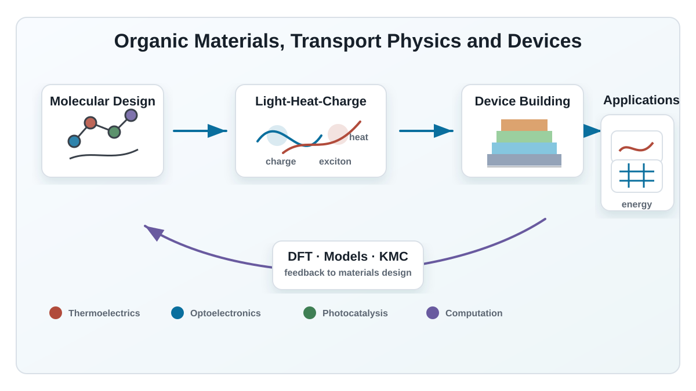

Organic Thermoelectrics
High-performance organic thermoelectric materials, doping strategies, carrier transport and flexible thermoelectric devices.
Organic materials for energy, light and charge transport
We study organic thermoelectric materials, organic optoelectronic devices, photocatalytic hydrogen evolution, and multiscale modeling of charge, exciton and heat transport.

Research Focus
High-performance organic thermoelectric materials, doping strategies, carrier transport and flexible thermoelectric devices.
Organic thin-film devices, light absorption, exciton generation, charge separation and interfacial transport.
Organic and hybrid photocatalysts for visible-light-driven hydrogen evolution and solar energy conversion.
DFT, physical modeling and Monte Carlo simulation to understand transport mechanisms and guide material design.
For Students
Students in the group are encouraged to connect experimental materials research with device fabrication, advanced characterization and theoretical analysis. We welcome motivated students from chemistry, materials science, physics, electronics, energy science and related backgrounds.